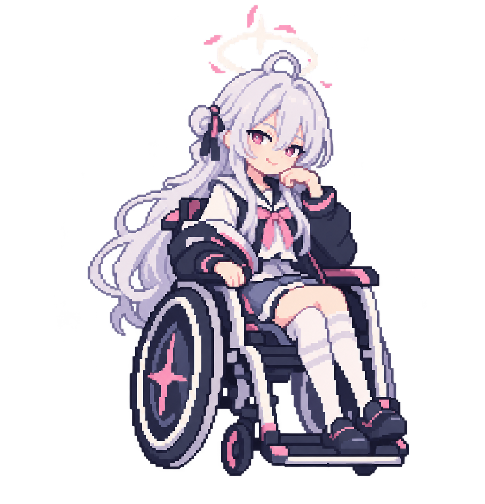

<!doctype html>
<html lang="ko">
<meta charset="utf-8">
<meta name="viewport" content="width=device-width, initial-scale=1">
<title>히마리 도트 애니메이션 시험</title>
<style>
  * { box-sizing: border-box } body { margin: 0; background: #e9edf6; color: #26314c; font: 15px 'Segoe UI', sans-serif }
  main { max-width: 960px; margin: auto; padding: 28px } h1 { font-size: 23px } p { line-height: 1.6 }
  .layout { display: flex; flex-wrap: wrap; gap: 20px } .stage { flex: 1 1 500px; min-height: 540px; display: grid; place-items: end center; background: linear-gradient(145deg,#dbe4f3,#f8f6fc); border-radius: 18px; overflow: hidden }
  img { height: var(--size, 300px); max-width: 100%; object-fit: contain; image-rendering: pixelated; margin-bottom: 30px }
  aside { flex: 1 1 240px; background: white; border-radius: 18px; padding: 20px; align-self: start }
  label { display: block; font-weight: 600; margin: 16px 0 8px } select, input { width: 100%; padding: 8px } .note { color: #58647b; font-size: 13px }
</style>
<main><h1>히마리 도트 애니메이션 시험</h1><p>기본 자세, 눈 깜빡임, 말하는 입 모양을 시험합니다.</p>
<div class="layout"><div class="stage"></div>
<aside><label for="mode">동작</label><select id="mode"><option value="idle">대기 (눈 깜빡임)</option><option value="talk">말하기</option><option value="still">정지</option><option value="blink">눈 감기 프레임</option><option value="mouth">입 열기 프레임</option></select>
<label for="size">표시 높이: <span id="size-label">300</span>px</label><input id="size" type="range" min="160" max="480" value="300" step="10">
<p class="note">초기 프레임 시험입니다. AI가 각 프레임을 따로 수정했기 때문에 얼굴 외에도 세부가 달라질 수 있습니다. 확정된 픽셀 격자나 최종 애니메이션 에셋은 아닙니다.</p></aside></div></main>
<script>
const img = document.querySelector('#character'), mode = document.querySelector('#mode'), size = document.querySelector('#size');
const frames = {}; for (const name of ['idle','blink','talk']) { frames[name] = new Image(); frames[name].src = name + '.png'; }
let start = performance.now();
mode.addEventListener('change', () => { start = performance.now(); });
size.addEventListener('input', () => { img.style.setProperty('--size', size.value + 'px'); document.querySelector('#size-label').textContent = size.value; });
function tick(now) {
  const t = now - start; let frame = 'idle';
  if (mode.value === 'blink') frame = 'blink';
  else if (mode.value === 'mouth') frame = 'talk';
  else if (mode.value === 'idle' && t % 4000 > 3820) frame = 'blink';
  else if (mode.value === 'talk' && Math.floor(t / 260) % 2) frame = 'talk';
  const src = frame + '.png'; if (!img.src.endsWith('/' + src)) img.src = src;
  requestAnimationFrame(tick);
}
requestAnimationFrame(tick);
</script>
</html>
